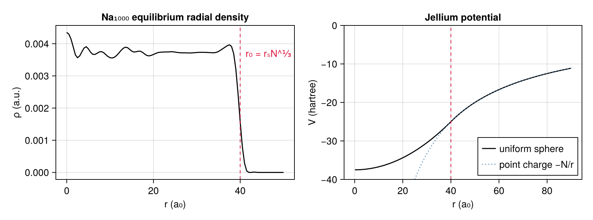
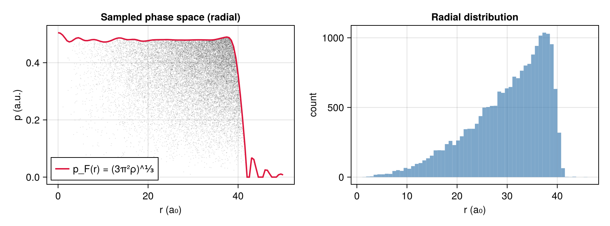

Principles
What is being solved, and why this model rather than another.
The physical system
A sodium cluster Na_N holds N valence electrons — one per atom — moving in the field of N ionic cores. At the sizes of interest (N from 40 to 1000) a quantum-mechanical treatment of every electron is out of reach for the dynamics, which is what the thesis is about: what happens over femtoseconds when the cluster is excited, or when an ion crosses it.
Two approximations make it tractable.
The jellium background. The ionic cores are replaced by a uniformly charged sphere of N positive charges, of radius
\[r_0 = r_s N^{1/3}, \qquad r_s = 4\,a_0 \ \text{for sodium}\]
This drops the crystalline structure but keeps what matters for collective motion: the confining potential. It is Jellium, and without it there is no cluster at all — only an electron gas repelling itself apart.
The semi-classical limit. Time-dependent density-functional theory in the local-density approximation (TDLDA), taken to its semi-classical limit, becomes the Vlasov equation for the one-body phase-space distribution $f(\mathbf r, \mathbf p, t)$:
\[\frac{\partial f}{\partial t} + \frac{\mathbf p}{m}\cdot\nabla_{\mathbf r} f - \nabla_{\mathbf r} V[\rho]\cdot\nabla_{\mathbf p} f = 0\]
The field is self-consistent: V depends on f through the density $\rho(\mathbf r,t) = \int f\,d^3p$. That coupling is the whole difficulty, and the reason the solver looks the way it does.
The mean field
Three terms, all in src/meanfield.jl:
\[V[\rho] = \underbrace{V_H[\rho]}_{\text{Hartree}} + \underbrace{V_{xc}[\rho]}_{\text{exchange-correlation}} + \underbrace{V_{jel}}_{\text{ionic background}}\]
- Hartree — the electrons' own electrostatic repulsion, obtained by solving Poisson's equation $\nabla^2 V_H = -4\pi\rho$. This is the expensive part, and the subject of Numerics.
- Exchange-correlation — LDA: Dirac exchange plus Gunnarsson–Lundqvist correlation, a local function of the density alone (
xc_potential). It is not a small correction: on a real cluster density it changes the coefficient vector by more than 50 %, which is asserted as a test. - Jellium — the attraction of the positive background (
uniform_sphere_potential), finite at the centre, Coulombic outside.
grid, dens = read_radial_density(joinpath(root, "ref/these/rhorad.Na1000.dat"))
jel = Jellium(1000.0)
fig = Figure(size = (860, 320))
ax1 = Axis(fig[1, 1], xlabel = "r (a₀)", ylabel = "ρ (a.u.)",
title = "Na₁₀₀₀ equilibrium radial density")
lines!(ax1, grid, dens, color = :black)
vlines!(ax1, [jel.radius], color = (:crimson, 0.7), linestyle = :dash)
text!(ax1, jel.radius, maximum(dens) * 0.85; text = " r₀ = rₛN^⅓",
color = :crimson, align = (:left, :center))
r = range(0.1, 90; length = 400)
ax2 = Axis(fig[1, 2], xlabel = "r (a₀)", ylabel = "V (hartree)",
title = "Jellium potential")
lines!(ax2, r, [Vlasov.potential(jel, x) for x in r], color = :black,
label = "uniform sphere")
lines!(ax2, r, [-1000.0 / x for x in r], color = (:steelblue, 0.8),
linestyle = :dot, label = "point charge −N/r")
vlines!(ax2, [jel.radius], color = (:crimson, 0.7), linestyle = :dash)
axislegend(ax2, position = :rb)
ylims!(ax2, -40, 0)
fig
The potential is continuous in value and in field at r₀ — a property the test suite checks by one-sided finite differences, because getting it wrong produces a plausible-looking but subtly bound cluster.
Pseudo-particles
The Vlasov equation is solved by characteristics: f is constant along the trajectories of the field it generates. Sample f once with N_p points, push each along its characteristic, and the sample keeps describing f.
Each sample point is a pseudo-particle carrying weight = N_elec / N_p electrons — so its mass and charge are those of that many electrons taken together (ParticleCloud). It is not a physical particle, and it is not point-like: for the purposes of the field it is a Gaussian packet of width σ = h/3 tied to the grid step (see Smoothed deposition).
phase space f(r,p) grid
────────────────── ────
· · · · · ┌───┬───┬───┐
· · ··· · ── deposit ──▶ │ │ │ │ ρ at collocation points
· ·· · · · ├───┼───┼───┤
· · · │ │ │ │
└───┴───┴───┘
▲ │
│ │ Poisson + mean field
└───────── forces ◀──────────────┘The number of pseudo-particles is a convergence parameter, not a detail. The thesis's production runs used 800 000, and the reason is measurable: at 20 000 the full trajectory of a crossing proton is still right to a few per cent, but the thesis's local dE/dx estimator — a slope over four bohr — goes negative under sampling noise. See Validation.
The initial state
The cluster must start at equilibrium, or the dynamics measures the relaxation of a bad guess. Equilibrium here is Thomas–Fermi: at each point, momenta fill the local Fermi sphere of radius
\[p_F(\mathbf r) = \left(3\pi^2 \rho(\mathbf r)\right)^{1/3}\]
That is FERMI_COEFFICIENT and sample_thomas_fermi. It gives the initial distribution its fermionic character — which the thesis shows survives the dynamics, the Vlasov equation having no mechanism to destroy it.
Two routes to the same state coexist in the code, because they are two ages of the original (PhaseSpaceProfile):
| Type | Fortran | How |
|---|---|---|
RadialProfile | initialise (1997) | inverse-transform sampling of a tabulated radial density |
PotentialProfile | initialise4 (1998) | rejection sampling in phase space against a self-consistent potential |
prof = PotentialProfile(grid, dens)
pos, mom = sample_thomas_fermi(prof, 20_000, 1000.0 / 20_000)
rr = [sqrt(sum(abs2, p)) for p in pos]
pp = [sqrt(sum(abs2, p)) for p in mom] ./ (1000.0 / 20_000)
fig = Figure(size = (860, 320))
ax1 = Axis(fig[1, 1], xlabel = "r (a₀)", ylabel = "p (a.u.)",
title = "Sampled phase space (radial)")
CairoMakie.scatter!(ax1, rr, pp, markersize = 1.5, color = (:black, 0.15))
lines!(ax1, grid, FERMI_COEFFICIENT .* cbrt.(dens), color = :crimson,
linewidth = 2, label = "p_F(r) = (3π²ρ)^⅓")
axislegend(ax1, position = :lb)
ax2 = Axis(fig[1, 2], xlabel = "r (a₀)", ylabel = "count",
title = "Radial distribution")
hist!(ax2, rr, bins = 60, color = (:steelblue, 0.7))
fig
The sampled cloud fills exactly the region under p_F(r) — the envelope is not fitted, it is the curve the sampler is built from.
The projectile
Chapter 6 of the thesis, and the reason for Projectile: a proton of a few keV crosses the cluster, and the measured quantity is the energy it loses, the stopping power dE/dx.
The proton is followed by its own Verlet, feeling the pseudo-particles and the jellium, and giving back the reaction on each pseudo-particle. Its short-range interaction with a pseudo-particle must be regularised — a point charge passing through a packet of electrons would otherwise feel an infinite force.
How it is regularised is not a detail. The thesis says the energy loss depends strongly on it, and the two available forms disagree by a factor 1.3 on the result. That is The softening: ball or Gaussian, and it is the one place where this port departs from the Fortran on purpose.
Units and conserved quantities
Everything is in atomic units. The observable that says whether the integration is sound is the energy budget (EnergyBudget):
\[E_{tot} = E_{kin} + E_{H} + E_{mf} + E_{ions}\]
On an isolated cluster it must be conserved. The scheme is symplectic, so the total oscillates — it must not drift, and the test suite asserts exactly that: neither monotonically up nor monotonically down. The budget is measured against the scale of the terms composing it, because it is a small difference of large numbers.
⚠️ The budget observes; it feeds back into nothing. That is what licenses computing it only one step in ten, as the Fortran did — worth ×1.6 on the running time, and asserted in the tests as producing rigorously identical positions.